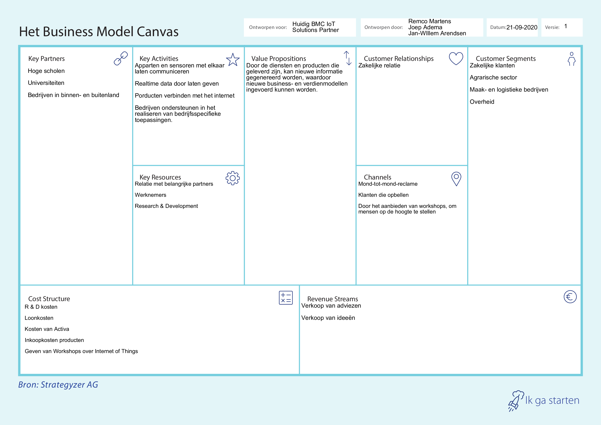

Naam: Jan-Willem Arendsen, Datum: 29-10-2020
Aan de hand van de gastles, gegeven door Geert Rensen van Beinformed in les 2, zie Reflectie SMART-business les 2, is er door onze projectgroep een Businessmodel Canvas (BMC) voor het bedrijf IoT Solutions Partner gemaakt. De projectgroep bestaat uit Joep Adema, Remco Martens en Jan-Willem Arendsen.
Volgens Strategyzer beschrijft een BMC door middel van negen bouwblokken hoe de organisatie waarde levert en behoudt. Namelijk de belangrijkste partners, de kernactiviteiten, de waardeproposities, de klantrelaties, de klant segmenten, de kernmiddelen, de kanalen, de kostenstructuur en de inkomstenstromen. Deze negen bouwblokken worden samengevoegd in één canvas, om tot nieuwe businessmodellen te komen (Strategyzer, 2011).
Eerst had ik voor mijzelf een Businessmodel Canvas (BMC) opgesteld voor IoT Solutions Partner. Hierbij heb ik het model verkeerd begrepen. Deze BMC ging over ons projectgroep en niet over het bedrijf IoT Solutions Partner. Ik dacht dat je ook over je eigen projectgroep een BMC kon maken. In deze BMC wou ik als kernmiddelen de opleidingen van ons gebruiken, als kernactiviteiten de sterke punten van ons en als waardeproposities wat wij aan het bedrijf kunnen leveren. Zie afbeelding Businessmodel Canvas projectgroep Legionellapreventiesysteem.
Dit was achteraf niet de bedoeling, waarna er een andere BMC is gemaakt over het bedrijf IoT Solutions Partner. Deze BMC is ingevuld als oefening voor de workshop van Paul Kalis over het TOM-model. De ingevulde BMC van het bedrijf IoT Solutions Partner is te vinden in figuur 2 Businessmodel Canvas IoT Solutions Partner.
De informatie die gebruikt is om deze BMC in te vullen, komen van de website van IoT Solutions Partner https://www.iotsolutionspartner.nl/. Op deze website stond dat belangrijke partners voor dit bedrijf Hogescholen, universiteiten en bedrijven in het binnen- en buitenland zijn. De kernactiviteiten van IoT Solutions Partner zijn, apparaten en sensoren met elkaar laten communiceren, realtime data doorgeven, producten met het internet verbinden en bedrijven ondersteunen in het realiseren van bedrijfsspecifieke toepassingen. De waardeproposities van IoT Solutions Partner zijn om nieuwe informatie te generen, door de diensten en producten die geleverd zijn, waardoor nieuwe business- en verdienmodellen ingevoerd kunnen worden. Er zijn alleen zakelijke klanten. De kanalen om de klanten te bereiken gaan via mond-tot-mondreclame, klanten die hen opbellen en door het aanbieden van workshops, om mensen op de hoogte te houden over Internet of Things. De klantensegmenten zijn zakelijke klanten uit vooral de agrarische sector, de maakindustrie, logistieke bedrijven en de overheid (Iot Solutions Partner, sd).
De kosten die IoT Solutions Partner maakt hebben vooral betrekking op R&D kosten (Research en Development), loonkosten, kosten van activa, inkoopkosten van producten en de kosten voor het geven van de workshops. De inkomststromen zijn de verkoop van adviezen en de verkoop van ideeën. IoT Solutions Partner verkoopt namelijk geen serie producten. Wanneer een product succesvol verkocht kan worden, wordt dit door een andere B.V. gedaan (Iot Solutions Partner, sd).
Ga naar
Businessmodel Canvas AXA
{kind=link}
{kind=link}